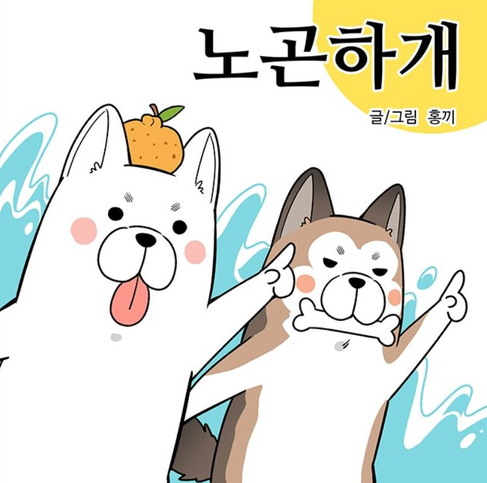

+ 노곤하개 LAZYDOG +
01. 정보
|  | |
| 이름 | 노곤하개 |
|---|---|
| 글/그림 | 홍끼 |
| 플랫폼 | 네이버 웹툰 |
| 장르 | 일상/개그 |
| 연재 시작 | 2017.12.05. |
| 연재주소 | 링크 |
| 귀여운 멍멍이들과 함께하는 노곤하지 않은 일상 이야기. 베스트 도전에서 정식 연재로 승격된 웹툰이다. 홍끼 작가 본인의 반려견 재구와 홍구와 함께 사는 일상 이야기를 그리며, 당연히 주로 다루는 이야기는 반려견의 이야기.가끔 반려묘인 매미나 줍줍이, 욘두의 이야기가 주 내용이기도 하는데 이 경우, 타이틀이 한시적으로 노곤하개 냥!으로 바뀐다. |
|
02. 사람
02-1. 홍끼
작가 본인이며, 여성. 고향은 제주도이지만 웹툰 2부에서 결혼 후 구들을 데리고 부천시로 이사하여 남편과 반려견, 반려묘들과 생활하고 있다. 최근 다시 제주도로 이사하여 기존에 있던 집을 수리해 살 예정이라는 소식을 전하였다.
웹툰 연재와 함께 유튜브 방송을 병행하고 있는데, 얼굴을 가리고 목소리로만 등장하고 있다.
웹툰 연재와 함께 유튜브 방송을 병행하고 있는데, 얼굴을 가리고 목소리로만 등장하고 있다.
02-2. 종구
홍끼 작가의 남편으로, 시즌1의 47화부터 등장한다. 캐릭터의 얼굴형은 강아지 귀가 달린 지우개처럼 생겼다. 반려동물에게 간식 주는 것에 관대하거나 뒷처리가 미흡한 장면들이 작중에서 많이 나오지만, 반려동물을 책임감 있게 입양하고 돌봐주는 감성 충만한 조력자.
주로 하는 일은 산책 때 반려견들의 배변을 처리한다. 처음에는 동물을 별로 좋아하지 않았으나 구들을 보고 푹 빠져 동물을 좋아하게 된 케이스.
주로 하는 일은 산책 때 반려견들의 배변을 처리한다. 처음에는 동물을 별로 좋아하지 않았으나 구들을 보고 푹 빠져 동물을 좋아하게 된 케이스.
03. 구들
03-1. 재구
얼굴을 제외한 머리와 등의 털이 갈색이다. 고집이 세고 귀찮음이 많으며 홍구와 장난을 자주 친다. 중형견이라 싸우는 것처럼 보일 때도 있지만 엄연히 장난을 치고 있는 것이라고 한다. 고양이를 매우 좋아해서 매미에게 치근거리곤 했으며 줍줍이에게도 호감을 빠르게 보였다. 외출시 아무 길고양이들에게나 호감을 표하며 다가가고 싶어해서 작가를 애먹게 했으나, 욘두의 등장 이후로 호감이 줄어들었다. 도시에서 산책할 때 암컷 개들에게만 친절한 반응을 보인다.
03-2. 홍구
작중에서는 하얀 털로 묘사되지만, 어렸을 때 머리와 등의 연갈색 털이 자라면서 옅어진 것이다. 재구에 비해 얌전하지만, 재구와 형제인 것을 무시할 수는 없는지 형과 별반 다르지 않다. 질투심이 많아 줍줍이가 왔을 때 투닥거리기도 하였고, 욘두가 온 이후에는 집이 더 시끄러워진 게 불만인지 이따금 냥이들 밥이나 간식을 훔쳐먹곤 한다.
04. 냐냐들
04-1. 매미
고양이. 검은 털에 하얀 턱시도가 특징. 강아지를 싫어하는 냥아치. 암컷 길 고양이들에게는 한없이 다정하며, 식탐이 많다. 작가가 서울로 상경할 때 제주도 고향집에 그대로 남아있다. 그로 인하여 작가의 결혼 이후를 다루는 내용부터 매미의 출연이 뜸해지고 잘 나오지 않는다.
04-2. 줍줍이
고양이. 삼색냥이다. 블로그와 인스타에 선행공개 되고, 이후 웹툰 내용에 합류한 케이스. 작가가 유기동물 보호 사이트에서 발견하고 남편을 간곡히 설득한 끝에 여러 준비를 거치고서 입양해왔다. 개냥이이며, 상당히 외모가 이쁘다. 장난기가 있으며, 작가의 발등에 주방 가위를 떨어뜨리는 사고를 쳐 작가가 깁스를 하게 되는 계기를 제공하기도 했다.
04-3. 욘두
고양이. 줍줍이처럼 삼색털이나, 줍줍이와의 구분법은 줍줍이보다 얼굴의 비율이 좀 더 크다. 줍줍이가 볼일을 보고 나면 굳이 나서서 대신 묻어주기도 하고, 인간의 변기에 묻는 시늉을 하다가 변기에 빠진 적도 있다. 다른 반려동물들은 모두 작가의 성을 따서 홍홍구, 홍재구, 홍줍줍으로 불리지만 욘두는 작가 남편의 성을 따서 박욘두라고 불린다.